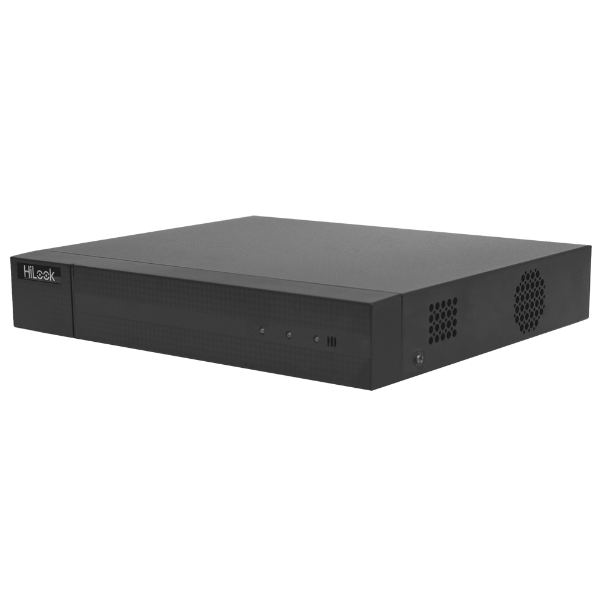

DVR 1080P Lite Pentahibrido / 4 Canales TURBOHD + 1 Canal IP / 1 Bahía de Disco Duro / H.264+ / 1 Canal de Audio / Salida de Vídeo Full HD

$960.76
Características Principales:
Soporta 4 canales TURBO + 1 canal IP = 5 canales en total.
NOTA: Permite apagar canales análogos para agregar canales IP.
Sistema pentahibrido (TVI / AHD / CVI / CVBS).
Compresión: H.264+ / H.264.
Soporta 1 bahia de disco duro de hasta 6 TB (no incluida).
1 Entrada y 1 salida de audio por RCA.
Salida de vídeo HDMI / VGA simultanea (Full HD).
Compatible con Hik-Connect (P2P).